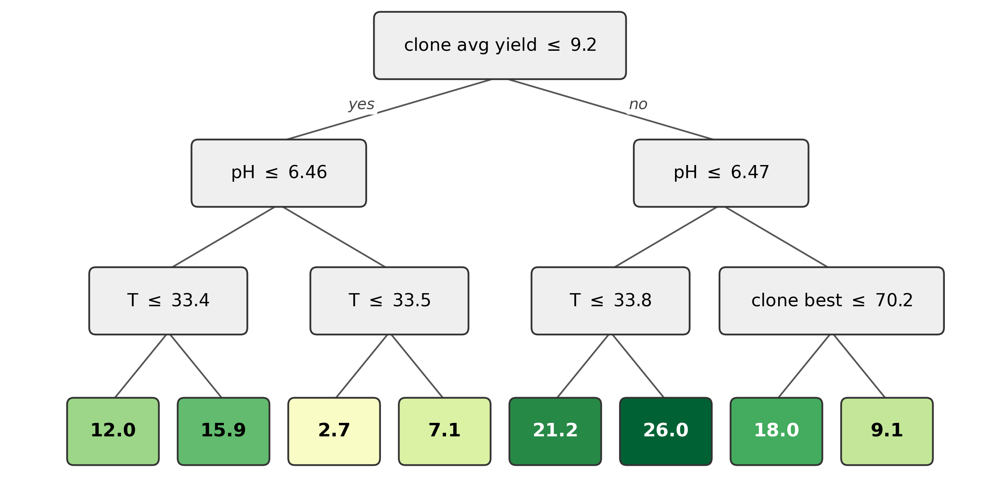
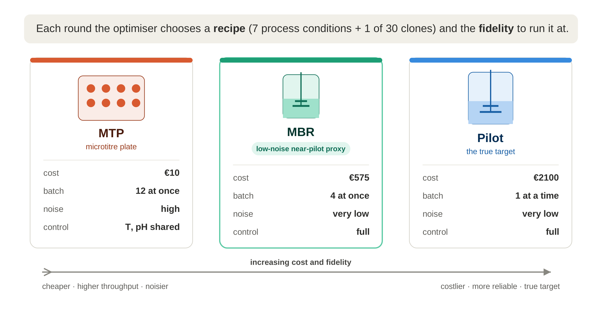
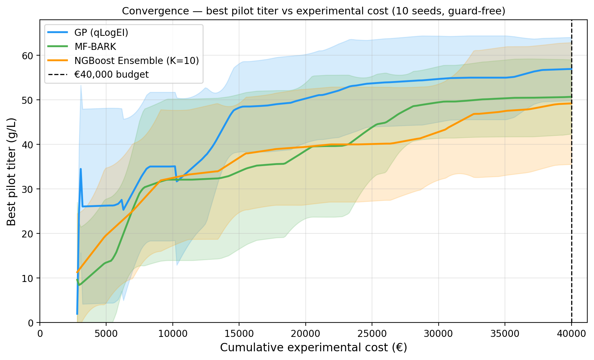
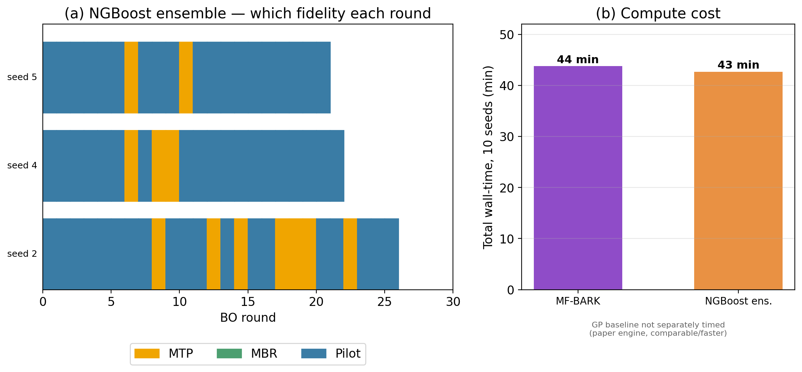
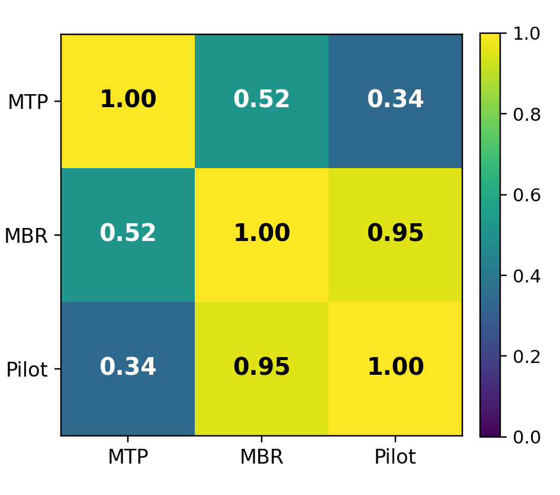
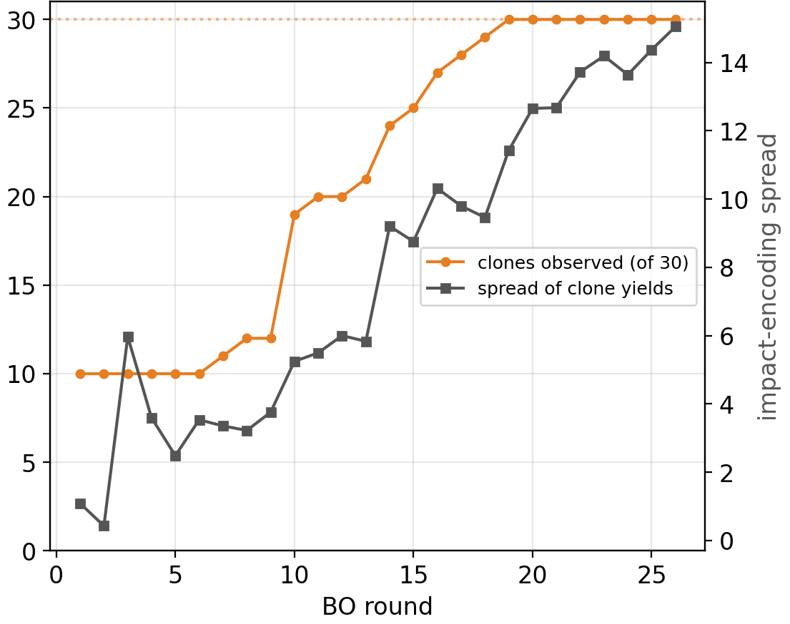
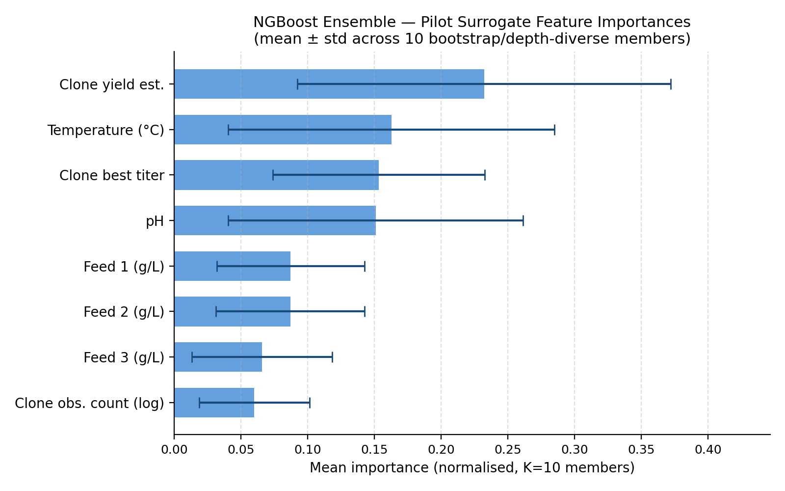
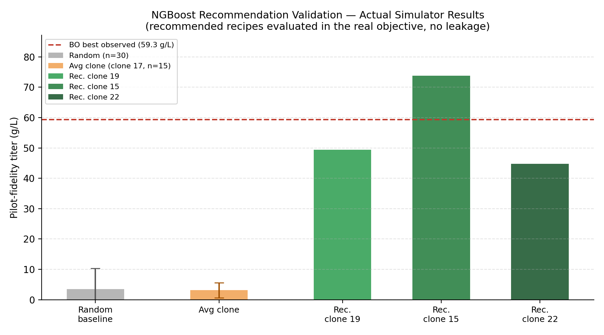
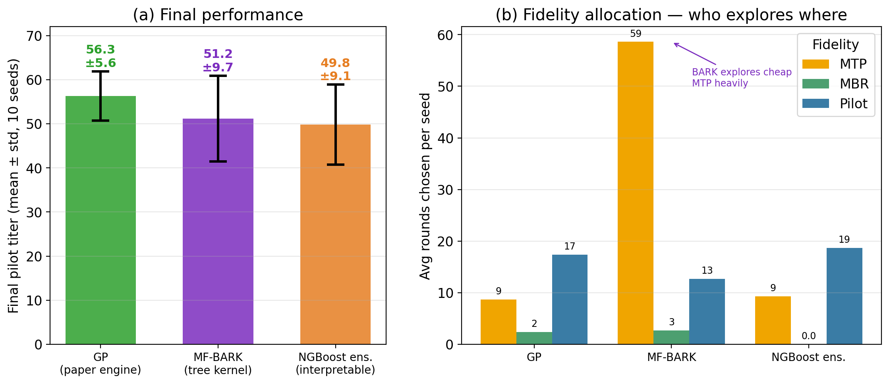

01
Read the model
The interpretable surrogate distils to one small tree. Move the four controls to walk a recipe down to its leaf.
How well this line has performed so far
Only consulted on one branch
Predicted pilot titer
15.9g/L
Decision path
A depth‑3 tree has exactly eight leaves, so it can return eight values and 26.0 g/L is the largest. These are model predictions, not measurements. The tree reproduces the full ensemble with an R² of 0.835.
02
Spending the budget
Best pilot titer against cumulative experimental cost, averaged over ten seeds. Play the campaign, or drag to any point in the budget.
Traces come from a separate ten‑seed run, so the endpoints sit close to the reported means without matching them exactly.
03
Where they finish
Final pilot titer. The rule spans one standard deviation, the tick is the mean, each dot is one of the ten runs.
04
Do the rules hold up?
Cell lines chosen by reading the model, run back through the simulator. Pick one.
Cell line 15
73.8g/L
21.1× the random baseline
Each recommendation was run once; the two baselines are averages over 30 and 15 runs. The comparison reflects the whole recipe, not the rules alone.
05
Plates
Figures from the write-up.

Eight more plates







